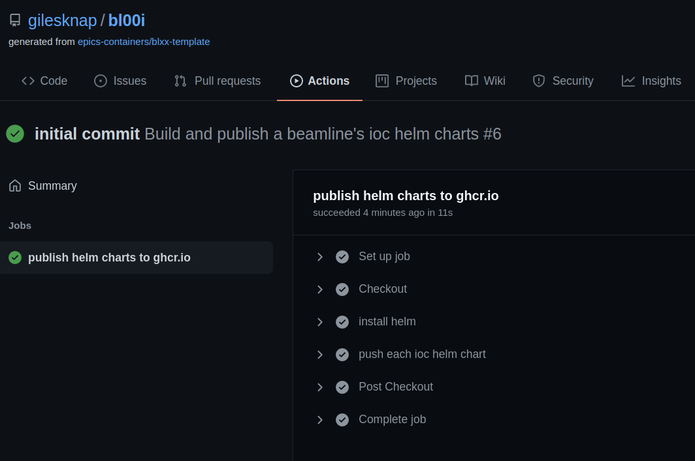

Create a beamline repository#
In this tutorial we will create a new beamline source repository on github.
This is where the definitions of IOCs for a beamline will be held. Continuous integration will generate helm charts for each IOC and push them to your account’s package repository.
The beamline will come with an example IOC and further steps in the tutorial will teach you how to add your own.
To Start#
For this exercise you will require a github user account or organization in which to place the new repo. If you do not have one then follow GitHub’s instructions.
Log in to your account by going here login.
Create a repository#
Navigate to the beamline template repo here epics-containers/blxx-template
Click on ‘Use This Template’. Choose a name and description for your repo. Click ‘Create Repository From Template’.

This will create your new repository and take you to its Code panel.
Now Click on ‘Code’ and copy the SSH or HTTPS link presented. This depends on how you will authenticate to github. HTTPS will ask you for your user name and password for all transactions. To setup SSH authentication see about ssh
Clone and Tag the Repository#
NOTE: For the remainder of the tutorial you will use the project you created in Deploy The Example IOC. You need to substitute in your account details to the commands listed here.
In a terminal use git to clone the repository by pasting in the URL you copied in the previous step:
git clone git@github.com:<your account or organization>/bl00i.git
Now test that CI is working by tagging the repo and pushing it back to github.
cd to the root of the project you created in Deploy The Example IOC, then:
git tag 0.1
git push origin 0.1
This will cause github CI to generate a helm chart for the example IOC and deliver it to the account packages repository.
To watch the progress go to the Actions Panel for your project.
Once the CI completes you should have a helm chart delivered in your packages. Go to the code pane and click on the example Package circled below to see it.

There will be one version of the package, with two tags:
the tag you set on the source
and the ‘latest’ tag